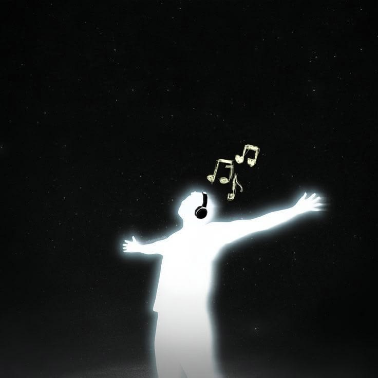

🎧 Música Electrónica
Soy de los que pueden escuchar un poco de todo dependiendo del momento, del lugar o de con quién esté, puedo disfrutar de distintos géneros sin problema porque al final aprecio la buena música pero si me preguntas cuál es mi verdadera pasión, lo que realmente me mueve y mi género favorito por encima de cualquier otro la respuesta es indiscutible la música electrónica.
Para mí no es solo "ruido" o un ritmo repetitivo como dicen algunos es una experiencia que me conecta de una forma distinta un equilibrio perfecto entre tecnología, ritmo y energía y lo más loco es que no es solo una sensación mía o un gusto subjetivo hay mucha ciencia detrás de por qué la electrónica nos atrapa de esta manera y genera lo que genera en nosotros.
Siempre me ha fascinado cómo este género, desde un buen EDM hasta el electro-pop, literalmente "hackea" nuestra mente y nuestro cuerpo:
El sistema de recompensas:
La estructura de la música electrónica está diseñada para jugar con el sistema de recompensas del cerebro durante el "build-up" (cuando la tensión musical sube y se acelera antes de explotar), el cerebro empieza a anticipar lo que viene esa tensión acumulada hace que cuando finalmente revienta el drop, el cerebro libere una cantidad brutal de dopamina es una recompensa química literal que genera euforia.
Coneccion con nuestro corazón:
Gran parte de la electrónica comercial y de club se mueve entre los 120 y 130 BPM (pulsaciones por minuto). La neurociencia llama "arrastre" o entrainment a este fenómeno: nuestro ritmo cardíaco y nuestras ondas cerebrales tienden a sincronizarse instintivamente con ese tempo el cual imita el latido de un corazón acelerado por la emoción o el ejercicio, básicamente la música te inyecta adrenalina a nivel fisiológico.
El poder de las frecuencias bajas:
Las frecuencias bajas no solo se escuchan se sienten estas ondas estimulan el sistema vestibular en el oído interno (el encargado de nuestro equilibrio y orientación espacial), el cerebro procesa esta vibración física casi como una fuerza motriz lo que nos provoca la necesidad instintiva de movernos y seguir el ritmo o bailar.
Por eso, ya sea que esté súper concentrado programando o simplemente buscando motivación para activarme la electrónica es mi banda sonora definitiva. Es el único género que logra alinear mi cabeza con mi energía y por eso siempre será mi favorita.